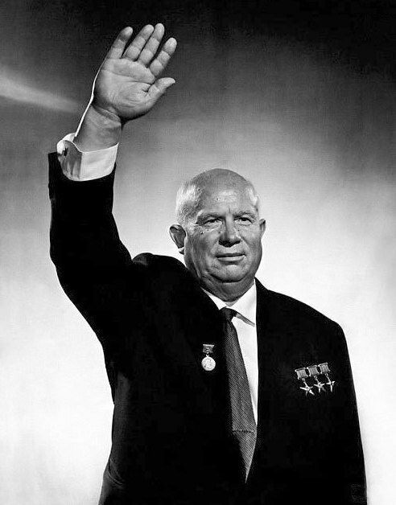

SumberNIKITA KHRUSHCHEV adalah pemimpin Uni Soviet yang berperan penting dalam mengarahkan negara tersebut setelah kematian Joseph Stalin, serta dalam periode awal Perang Dingin. Ia dikenal karena kebijakan domestik yang ambisius, serta perannya dalam krisis internasional yang menegangkan seperti Krisis Misil Kuba.
Nama Lengkap: Nikita Sergeyevich Khrushchev Lahir: 15 April 1894, Kalinovka, Kekaisaran Rusia (sekarang Rusia) Meninggal: 11 September 1971, Moskwa, Uni Soviet Jabatan: Sekretaris Jenderal Partai Komunis Uni Soviet (1953–1964) Perdana Menteri Uni Soviet (1958–1964) Pencapaian: Menerapkan kebijakan desentralisasi ekonomi, memulai "de-Stalinisasi", serta terlibat dalam beberapa krisis internasional penting.
Khrushchev lahir dalam keluarga petani dan bekerja di industri sebelum bergabung dengan Tentara Merah selama Perang Dunia I dan Perang Saudara Rusia. Ia bergabung dengan Partai Komunis pada usia muda dan meraih pangkat tinggi selama masa kepemimpinan Joseph Stalin. Pada 1930-an, Khrushchev menduduki beberapa posisi penting dalam Partai Komunis, dan kemudian menjadi Sekretaris Partai Komunis Ukraina. PERAN DALAM KEPEMIMPINAN UNI SOVIET 1. Periode Setelah Stalin (1953) Setelah kematian Stalin pada 1953, Uni Soviet berada dalam ketegangan politik, dengan perebutan kekuasaan di antara beberapa faksi dalam Partai Komunis. Khrushchev berhasil mengkonsolidasikan kekuasaan dan menjadi Sekretaris Jenderal Partai Komunis pada 1953, meskipun posisi utamanya sebagai pemimpin Uni Soviet baru semakin jelas setelah tahun 1956. 2. De-Stalinisasi dan Kebijakan Internasional Salah satu kebijakan utama Khrushchev adalah "de-Stalinisasi", yaitu proses mengurangi pengaruh dan warisan Stalin, serta menghapuskan kebijakan represif yang terkait dengan kepemimpinannya. Pada 1956, ia mengadakan pidato rahasia di hadapan Partai Komunis Uni Soviet, mengkritik kekejaman Stalin dan menyebutnya sebagai penyalahgunaan kekuasaan. Khrushchev juga melaksanakan reformasi ekonomi, seperti desentralisasi industri dan meningkatkan produksi pertanian. Secara internasional, ia memperkenalkan kebijakan luar negeri yang lebih terbuka, meskipun tetap mempertahankan sistem komunis dan persaingan dengan Amerika Serikat. 3. Krisis Misil Kuba (1962) Salah satu momen paling dramatis di bawah kepemimpinan Khrushchev adalah Krisis Misil Kuba pada 1962. Setelah mengetahui bahwa Uni Soviet menempatkan misil nuklir di Kuba, Amerika Serikat di bawah Presiden John F. Kennedy merespons dengan ancaman militer. Krisis ini mendekatkan dunia pada perang nuklir, namun Khrushchev akhirnya setuju untuk menarik misil Soviet dari Kuba, sementara AS juga menarik misil mereka dari Turki, meskipun ini tidak diumumkan secara terbuka. Krisis ini menunjukkan ketegangan besar antara kedua kekuatan besar dalam Perang Dingin. 4. Program Ekonomi dan Rezim Otoriter Khrushchev berusaha meningkatkan produksi pertanian, khususnya dalam program "kompleks gandum" dan "revolusi susu". Namun, beberapa kebijakannya ini tidak memberikan hasil yang diharapkan, dan banyak proyeknya yang gagal. Di sisi lain, meskipun ia mengkritik tirani Stalin, Khrushchev juga menjalankan pemerintahan dengan tangan besi, meskipun lebih longgar dari Stalin. Kebebasan berekspresi dan kritik terhadap pemerintah masih sangat dibatasi, dan ada perburuan terhadap "anti-revolusioner" dan musuh politik.
1964: Setelah mengalami beberapa kegagalan ekonomi dan politik, Khrushchev dipecat oleh Kongres Partai Komunis dan digantikan oleh Leonid Brezhnev. Meskipun ia tidak diadili seperti Stalin, ia dipaksa untuk pensiun dan menjalani hidup yang relatif terasing. Khrushchev menghabiskan sisa hidupnya di Moskow, tetap terlibat dalam beberapa penulisan dan kenangan pribadi tentang pemerintahannya.
N ✅ Dampak Positif: Desentralisasi ekonomi dan de-Stalinisasi: Mengurangi beberapa kebijakan represif Stalin dan memulai perbaikan dalam kehidupan sosial-ekonomi di Uni Soviet. Krisis Misil Kuba menunjukkan pentingnya diplomasi dalam mencegah perang nuklir, meskipun ini juga menunjukkan ketegangan tinggi selama Perang Dingin. Memperkenalkan kebijakan luar negeri yang lebih diplomatik dan membuka dialog dengan dunia luar, meskipun masih dalam konteks persaingan ideologi dengan Barat. ❌ Dampak Negatif: Kebijakan ekonominya tidak selalu sukses, dan banyak programnya, seperti kompleks gandum, gagal mengatasi masalah pertanian Uni Soviet. Rezim otoriter meskipun lebih ringan dari Stalin, tetap mengekang kebebasan politik dan kebebasan berbicara, dan ada penindasan terhadap lawan-lawan politik. Khrushchev meninggalkan Uni Soviet dalam keadaan terpecah dalam hal ideologi dan ekonomi, dan ia tidak mampu memperkenalkan perubahan yang lebih fundamental dalam sistem sosialisme yang ada. Nikita Khrushchev dikenang sebagai pemimpin yang penuh kontradiksi: di satu sisi, ia memperkenalkan kebijakan yang lebih terbuka dan reformis, namun di sisi lain, ia tetap mempertahankan kontrol ketat atas negara dan rakyatnya. Kepemimpinannya sangat memengaruhi arah Perang Dingin dan dinamika politik internasional pada abad ke-20.